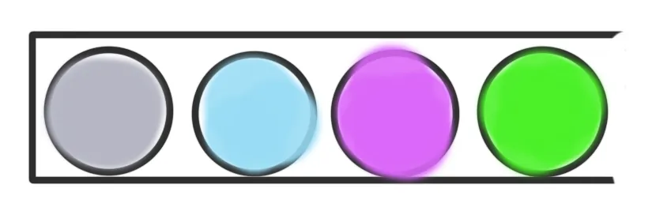
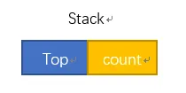
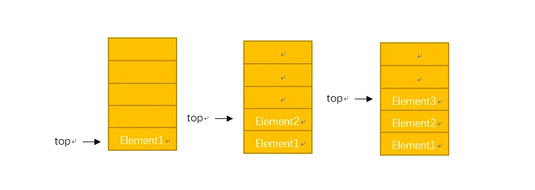
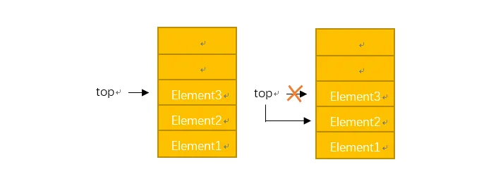

— DATA STRUCTURE / 03
第三章 栈
只在一端进出的线性表，数组或链式都能实现；括号匹配、表达式求值、递归都靠它撑住。
01 / SECTION
栈（先进后出的数据结构）的设计与实现
- 一句话定义：栈是一种先进后出（LIFO）的数据结构。
- 严格定义：栈是线性结构，只允许在一端（栈顶）插入和删除，禁止直接访问其余位置的数据。
- 直观理解：像单管装球——球只能从开口端取放，先放进去的球最后才能取出。
- 与前文呼应：只保留“在表尾插入新结点、删除末尾结点”两种操作的单链表，本质上就是栈。
- 分类：
- 数组栈：用数组模拟，实现快、书写简便。
- 链表栈：用链表实现，稍麻烦但更稳定；又分静态（容量固定）与动态（按需申请，理论上无上限）。
- 本节以动态链表栈为例，这也是各语言标准模板库中栈的实现方式。
- 结点设计：仿单链表结点（data + next），再加一个栈结构体保存
top（永远指向栈顶）与count（元素个数）： - 判空方式一：
count == 0；方式二：top与bottom指向同一空间。
cpp
typedef struct node { int data; struct node *next; } Node;
typedef struct stack { Node *top; int count; } Link_Stack;- 入栈（push）：malloc 新结点 →
temp->next = p->top; p->top = temp; p->count++;，即“头插”思想。




02 / SECTION
栈的基本操作及C语言代码实现
- 出栈（pop）：必须先判空；非空时
p->top = p->top->next; free(temp); p->count--; - 遍历：只能从栈顶往下走，所以输出天然是逆序的（从栈顶到栈底）；
while(temp) { ...; temp = temp->next; }。 - 数组栈（快速模拟实现）：结构体含
int data[maxn]与int top（也可加 bottom）。 - 初始化：malloc +
memset清零 +top = 0（用 top 表示“当前元素个数/下一个可写的下标”）。 - 入栈：
s->data[s->top++] = data; - 出栈：
if(s->top != 0){ ...; s->top--; } - 打印：下标从
top-1倒着输出。 - 链表栈 vs 数组栈：前者空间动态、无溢出但每次要 malloc；后者 O(1) 且缓存友好，但需预估容量。
- 配套练习：进制转换（1055 十进制转八进制、1192 十进制转二进制）；用栈代替递归（1131 斐波那契），这是理解 DFS 的基础。

03 / SECTION
栈数组与栈链表C语言代码实现
- 数组栈完整流程：
init()建栈 → 循环push()5 个数据 →print_stack()打印 →pop()一次 → 再打印，可直观验证后进先出。 - 链表栈完整流程：
Creat_stack()（count = 0; top = NULL）→ 循环Push_stack()→show_stack()→Pop_stack()→ 再show_stack()。 - 两种实现都遵循“建栈 → 入栈 → 遍历 → 出栈 → 再遍历”的验证套路，写题时可直接套用。
- 栈的价值：先进后出的特性天然适配“括号匹配、表达式求值、进制转换、函数调用/递归、DFS 回溯、撤销操作”等场景。